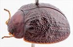
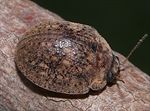
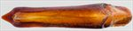
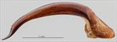
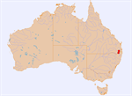

Click on images to enlarge


Male, Goomburra S.F., S.E. Queensland


Male, Undercliffe, N.E. New South Wales


Aedeagus, dorsal view (Goomburra S.F., S.E. Queensland)


Aedeagus, lateral view (Goomburra S.F., S.E. Queensland)


Distribution
Name
Trachymela sp. Ta149
Reference specimen
2001-287b, Goomburra State Forest, SE Queensland.
Adult Description
Length: ♂ 6.8–7.4 mm (n=4), ♀ 6.9 mm (n=1).
Colouration:
- Head: dark reddish-brown, usually with fronto-clypeal suture broadly rimmed in black, rear of head black (only visible if head extended); mandibles either completely black or dark brown with black tips; antennomeres 1–2 uniformly straw-brown or light brown, 3–11 slightly or prominently darker, each segment grading from light brown proximally to darker brown distally, rarely uniformly shaded.
- Pronotum: dark brown, concolorous with or fractionally darker than head, often with slight and diffuse variations in shade, with the anterior marginal areas in particular often fractionally darker-coloured.
- Scutellum: very dark brown or (more usually) black.
- Elytra: dark brown, mostly concolorous with pronotum with darker (usually almost black) verrucae and raised interstices scattered unevenly over disc; punctures are concolorous with or a fractionally lighter shade than interstices, humeral callus darker than surrounding area.
- Venter & Legs: head black, thoracic and abdominal ventrites very dark brown or black, legs concolorous with ventrites, inner surface of epipleurae black.
- Cuticular Wax: light brown, with a sparse covering present over most of surface, but denser patches on head, near lateral margins of pronotum and distributed somewhat unevenly over elytral surface, sometimes with small, very slightly denser clumps that may be arranged along VR3, VR5 and VR7 to form faint dashed lines.
Morphology:
- Head: punctures moderately large (pd ≈ 2× ef) and relatively evenly and densely distributed. Antennae moderate in length (AL/BL: ♂ 39–41%, ♀ unknown), filiform.
- Pronotum: almost evenly curved transversely, foveal depression shallow, rarely absent, usually with an elevated peak near its inner edge, discal area with surface smooth to very slightly uneven, and puncturation clearly impressed with punctures similar in size to slightly larger than those on head, evenly to very slightly unevenly distributed and relatively dense (spacing ≈ 1.5–2 pd), becoming much coarser towards lateral margins. Front margins join lateral margins in a smoothly rounded right-angle, with lateral margin curvature initially slight, then more pronounced towards rear margin, broadest about 2/3 of distance to posteriolateral angle.
- Scutellum: unpunctured or sometimes one or two small punctures, surface smooth to rough.
- Elytra: surface mostly evenly curved, usually with a shallow, transverse depression just in front of centre, punctures lie deep within convex interstices, are closely spaced and quite evenly spaced, the thickened interstices sometimes forming small elevated verrucae at their intersections, with the larger of these often having one or two very fine punctures, these verrucae sometimes aligning in one or two longitudinal rows near the posterior half of suture, surface appears slightly more granular in posterior third due to closer spacing of punctures, surface continuous under humeral callus. Vertical extension of epipleurae moderate (HCE/PW = 0.36–0.40).
- Venter: prosternal process almost parallel, lightly closed anteriorly, a very light scatter of setae present along prosternal process and on mesoventrite, anterior, median and posterior trochanters with 1 long seta; front edge of metaventrite beveled, flat; inner edge of epipleurae lacking setae.
Male Genitalia (Aedeagus):
- Dimensions: long (LPE/BL = 37–40%).
- Dorsal view: sides of shaft very slightly concave for most of central section with widest point about 20–25% of distance from apex (WPE ≈ 0.16 × LPE), narrowing smoothly towards apex in a very slightly concave arc to a prominently extended spatulate tip, dorsal surface lightly sclerotized, dorso-median channel present and may be short to moderately long, ostium small and oval in shape.
- Lateral view: shaft quite evenly and continually curved over most of length, curvature increasing noticeably near apex, the long spatula is deflexed and straight.
Immature Stages
Unknown.
Similar species
- Ta25: this slightly larger species is very abundant in south-east Queensland and northern New South Wales and is very similar to Ta149 in external morphology. Individuals of Ta149 lack the clump of setae on the trochanters that are characteristic of Ta25. The antennae of males of Ta25 are longer than those of Ta149. The aedeagus of Ta25 is more robust than that of Ta149, with a less sharply triangular spatula.
Notes
- Distribution & Abundance: This is a relatively rarely collected species from the ranges of NE New South Wales and SE Queensland.
- Host Associations: All known hosts are box-barked eucalypts (probably Eucalyptus sp., section Adnataria).
Copyright © 2026. All rights reserved.